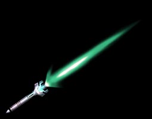
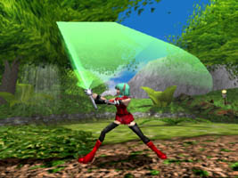
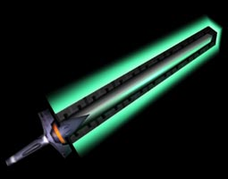
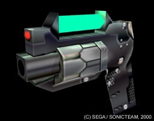
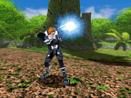
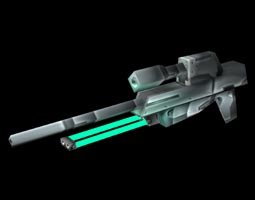
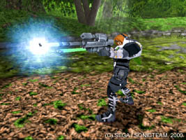
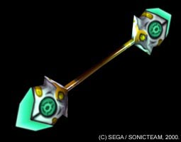
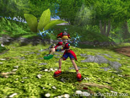

.
今回はゲーム序盤で手に入れることのできる武器を紹介します。
「PSO」世界の武器は「フォトン」と呼ばれる光の粒子をエネルギーとしています。
.
|

|

|
| 「セイバー」系武器 |
もっともポピュラーな近接戦用の武器。
ハンターが最初に装備しています。
対象エネミー一体に対して有効な武器です。 |
|

|

|
| 「ソード」系武器 |
ハンター専用の武器。
ソード系武器は攻撃範囲のエネミー複数体を、
同時に攻撃できる強力な武器です。 |
.
■武器の装備■
.
武器、防具にはそれぞれ、使いこなすために必要なパラメータが設定されており、
プレイヤーのパラメータがそれを越えていないと装備することができません。
ネットワークで強力な武器をもらっても、キャラクターを鍛えないと
強力な武器を装備することはできないのです。
.
|

|

|
| ハンドガン系武器 |
もっともポピュラーな遠距離用武器。
レンジャーが最初に装備しています。
ハンドガン系武器は対象エネミー１体
に対して有効な武器です。 |
|

|

|
| ライフル系武器 |
レンジャー専用の武器。
ハンドガン系より攻撃力が高く射程も長くなります。
ライフル系武器は対象エネミー１体
に対して有効な武器です。 |
.
■武器のランク分け■
.
武器は攻撃力の違いにより、ランク分けがされています。
ランク毎に呼称が違い、フォトンの色が変化します。
.
|

|

|
| ウォンド系武器 |
フォースの能力を最大限に引き出す杖です。
ウォンド系武器は対象エネミー１体
に対して有効な武器です。 |
|